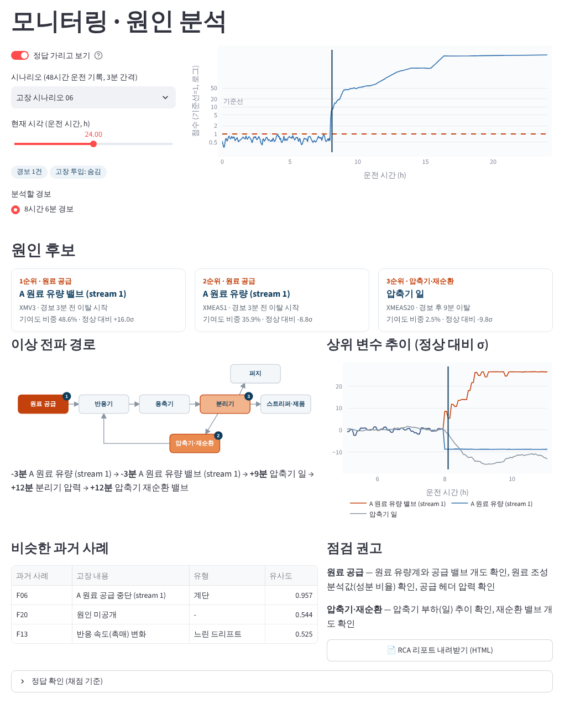
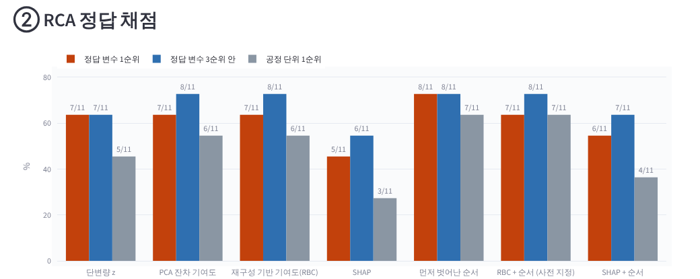
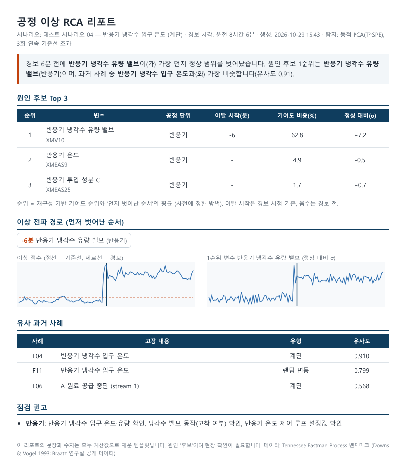
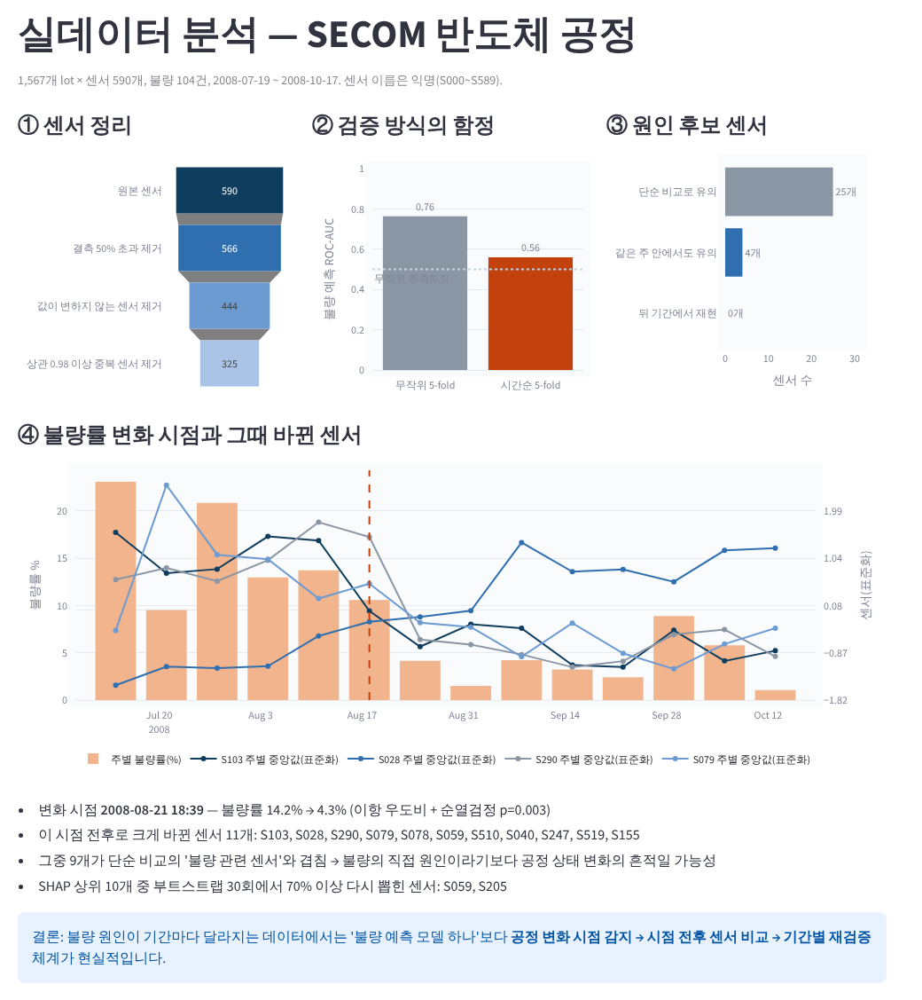
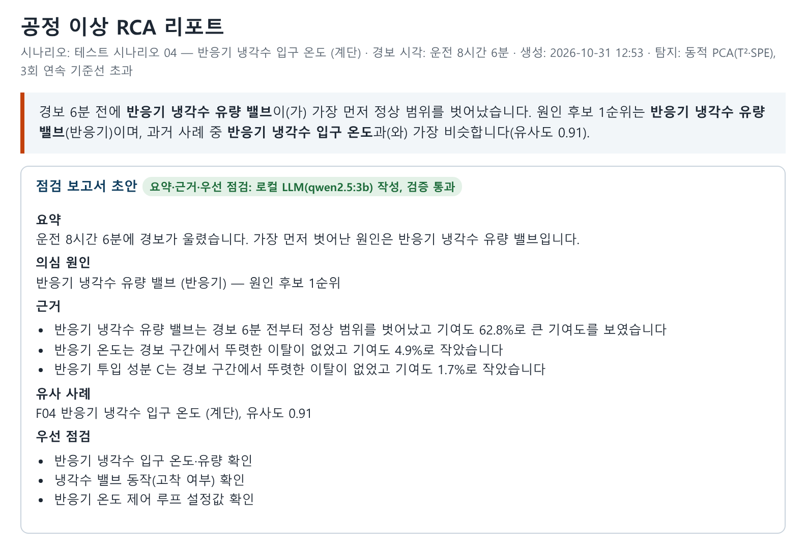

공장 센서에 경보가 울렸을 때 진짜 이상인지 판단하고, 어느 센서부터 확인해야 하는지, 예전에 비슷한 고장이 있었는지를 찾아 점검 보고서로 정리하는 프로젝트
| 기간 | 2026.10 |
| 인원 | 개인 |
| 데이터 | Tennessee Eastman Process(화학 공정 시뮬레이션, 측정값 41개 + 조작값 11개, 3분 간격, 고장 21종) · SECOM(실제 반도체 공정, lot 1,567개 × 센서 590개, 불량 104건) |
| 주요 기술 | Python, scikit-learn, XGBoost, SHAP, statsmodels, Streamlit, Plotly, Ollama(qwen2.5:3b) |
| 역할 | 프로젝트 방향과 범위 설정, 결과 검토. 설계·코드·분석은 생성형 AI(Claude)와 함께 진행 |
| GitHub | sung-ju-park/process-anomaly-rca · 쉽게 읽는 설명 |

공장 설비에는 센서가 수십 개씩 붙어 있고, 이상이 생기면 경보가 울립니다. 그 뒤 담당자는 진짜 이상인지, 어느 센서가 원인인지, 예전에도 비슷한 일이 있었는지를 로그와 과거 기록을 뒤지며 직접 확인해야 합니다. 이 프로젝트는 이 과정을 자동으로 처리하고, 원인 지목이 실제로 맞았는지를 결과를 보기 전에 정해 둔 정답으로 채점하는 것이 목표였습니다.
원인을 찾을 때 흔히 '가장 크게 변한 센서'나 SHAP처럼 '결과에 영향을 많이 준 센서'를 봅니다. 그런데 공장은 자동 제어 장치가 문제가 생긴 곳을 바로 메우려 하기 때문에, 원인 지점의 변화는 작게 보이고 영향을 받은 주변 설비가 오히려 크게 흔들립니다. 실제로 SHAP은 정답 원인을 11종 중 5종만 1순위로 맞혔습니다.
크기 대신 정상 범위를 가장 먼저 벗어난 순서(지수가중 이동평균이 정상 대비 3σ를 3번 연속 넘은 시점)로 원인 후보를 세웠습니다. 도미노처럼, 맨 끝이 가장 요란해도 원인은 처음 넘어진 쪽이라는 생각입니다. 이 방법이 정답 원인을 11종 중 8종에서 1순위로 찾아 비교한 방법 중 가장 좋았습니다.

유사 사례 검색은 첫 버전에서 1순위 적중이 44%였습니다. 놓친 고장들은 대부분 '평균은 그대로인데 흔들림만 커지는' 랜덤 변동·밸브 고착형이어서, 흔들림 크기를 특징에 더하고 과거 사례를 여러 구간으로 나눠 저장했습니다. 학습 파일로만 확인한 뒤 테스트를 한 번 다시 돌려 78%(top-3 83%)가 됐고, 첫 버전 결과도 그대로 남겨 두었습니다.

SECOM은 센서 이름이 익명이고 원인 정답이 없는 실제 반도체 공정 데이터입니다. 단순 비교로는 불량과 관련 있어 보이는 센서가 25개 나왔지만, 같은 주 안에서만 비교해 시기 차이를 걸러내니 4개로 줄었고, 뒤 기간에서 다시 확인하니 재현된 센서는 0개였습니다.
이유를 찾아보니 2008-08-21 전후로 불량률이 14.2%에서 4.3%로 떨어져 있었고(순열검정 p=0.003), 이때 값이 크게 바뀐 센서 11개 중 9개가 처음의 '불량 관련 센서'와 겹쳤습니다. 그 센서들은 불량 원인이라기보다 공정 상태가 바뀐 흔적일 가능성이 높습니다. 같은 이유로 데이터를 무작위로 섞어 검증하면 예측 점수(ROC-AUC)가 0.76으로 부풀고, 시간 순서대로 검증하면 0.56에 그쳤습니다. 그래서 결론을 '불량 예측 모델'이 아니라 '변화 시점 감지 → 시점 전후 비교 → 기간별 재검증'으로 바꿨습니다.

표와 숫자 위주의 리포트를 현장 담당자가 바로 읽을 수 있도록, 로컬 LLM(Ollama, qwen2.5:3b)이 분석 결과를 점검 보고서 문장으로 옮기게 했습니다. 공장 데이터를 외부로 보내지 않도록 노트북 CPU에서만 동작하고, 원인 판단은 LLM이 아니라 위에서 채점한 분석 코드가 합니다. LLM이 쓴 문장은 숫자·단위·센서 이름·'가장 먼저' 순서·최상급 표현·점검 목록 등을 코드로 실제 분석 결과와 대조하고, 틀리면 한 번 다시 쓰게 한 뒤 그래도 틀리면 미리 정한 문장으로 대체합니다.
| v1 | 분석 결과 JSON을 그대로 입력 → 검사 18/21 통과. 하지만 문장에 XMEAS30 같은 변수 코드와 입력 키 이름이 그대로 남아 현장에서 읽을 수 없는 수준 → 검사 기준이 느슨했음 |
| v2 | 코드 없는 문장형 입력 + 작성 예시, 검사 규칙 추가 → 읽기는 좋아졌지만 12/21. 실패 대부분이 답이 하나로 정해진 '의심 원인' 칸 |
| v3 | 정해진 칸(의심 원인·유사 사례)은 코드가 채우고, LLM은 요약·근거만 작성 → 17/21, 나머지 4건은 템플릿 문장으로 대체 |
검사기 자체도 확인했습니다. 정상 문장은 21건 모두 통과시키고, 일부러 틀린 내용을 넣은 문장은 14종 280건을 모두 막았습니다. 다만 검사는 숫자와 이름처럼 코드로 대조할 수 있는 것만 보기 때문에, 어색한 문장까지 걸러내지는 못합니다.

한계 — TEP는 시뮬레이션이라 실제 설비의 센서 고장·결측이 없고, 원인 채점 대상이 11종으로 적습니다. 고장 15·21번은 사실상 미탐지입니다. SECOM은 센서 이름이 익명이라 원인 후보를 물리적으로 확인할 수 없습니다.